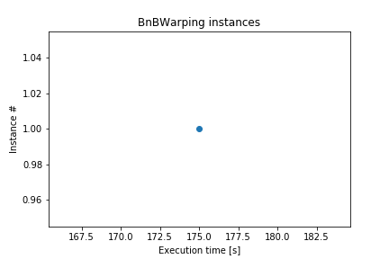

1 instances of BnBWarping were registered. The average size is 24.97 MB, the minimal size is 24.97 MB, the maximum size is 24.97 MB.
No per-referent sizes recorded.
No per-referent sizes recorded.
| Instance | BnBWarping at 0x2a4bbea0fd0 |
| Representation | |
| Lifetime | 00:02:55.01 - |
| 00:02:55.01 | 56 B |
| 00:02:59.21 | 4.18 KB |
| 00:03:12.36 | 24.97 MB |